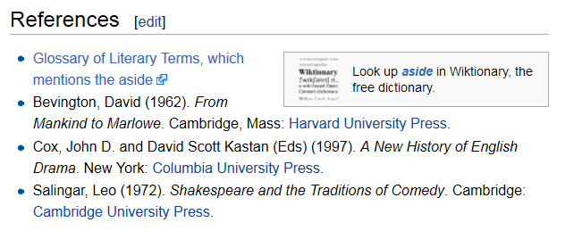

Kieran Mathieson
Oakland University
Dolfinity Learning, LLC
Display depends on a 3-way interaction:
Content x Device x User

Lose formatting, lose intent.
<aside>...</aside>
Let the device render content for its user.
# The Larch User: A heading, OK, I get that.
The larch is the Cool Dude of trees. Here's a larch:

User: WTF? What's all the slashy slashy?
Markup's precision of intent
+
GUI's ease of use
=
SWIM
function swim_process_filter($text,...) {
//Preprocessing.
$desc = array(
0 => array('pipe', 'r'), // stdin
1 => array('pipe', 'w'), // stdout
);
$py_path = DRUPAL_ROOT . '/'
. drupal_get_path('module', 'swim') .'/python/convert_rest.py';
$command = 'python ' . $py_path;
$p = proc_open($command, $desc, $pipes);
fwrite($pipes[0], $text);
fclose($pipes[0]);
$html = stream_get_contents($pipes[1]);
fclose($pipes[1]);
proc_close($p);
return $html;
}
#Read the content to translate.
data_in = ''
for line in sys.stdin:
data_in += line
#Translate it.
doc = core.publish_parts(data_in, writer_name='html')['html_body']
#Return translated content to Drupal.
print (doc)
#Create the chide directive
class Chide(Directive):
def run(self):
if user.can_chide: //user has Drupal perm data.
target = ''.join(self.content.data)
text = '<div>Tut, tut! ' + target + '</div>'
else:
text = '<p>You are not allowed to chide.</p>'
return [nodes.raw('', text, format='html')]
#Register the new directive.
directives.register_directive('chide', Chide)
This returns HTML, but it could return a renderable array instead.
(probably)
kieran@dolfinity.com
mathieso on D.O